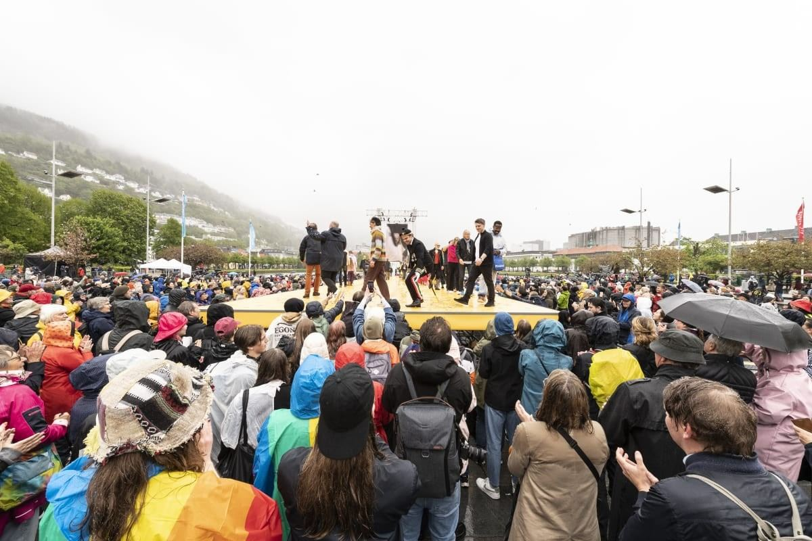

Festivals · Arts
Bergen International Festival 2027
- Dates
- –
- Venue
- Venues across Bergen
- Location
- Bergen, Norway
- Format
- In-person
- Category
- Arts
- Industry
- Arts
- Organiser
- Festspillene i Bergen
- Official website
- https://www.fib.no/en
About
Dates are local civil dates in Norway (Europe/Oslo).
Topics: performing arts, classical music, theatre, dance.
No organiser attendance figure found on the official pages fetched 24 Nov 2026. Ranked by our estimated size tier 'large' (30,000-100,000 attendees/visits), a judgement from format, venue and scale, not an official number.